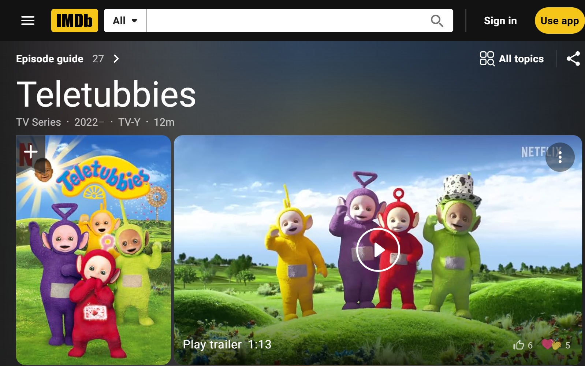

Teletorture
Catalogue home
1960s–1970s
1980s
1990s
2000s
2010s
2020s
Search Catalogue
← Return to 2003
Title:
Teletorture
Date:
2003
Medium:
Oil on canvas
Dimensions:
24 × 20 inches
Work ID:
RE-000564
Signature:
Signed “ENGLISH,” lower right.
Ancillary Documentation

Teletubbies characters
Popular-culture characters depicted in this work.
IMDb
← Previous: Teen Ace with Vase
Next: The Golden Age of Glam Art →